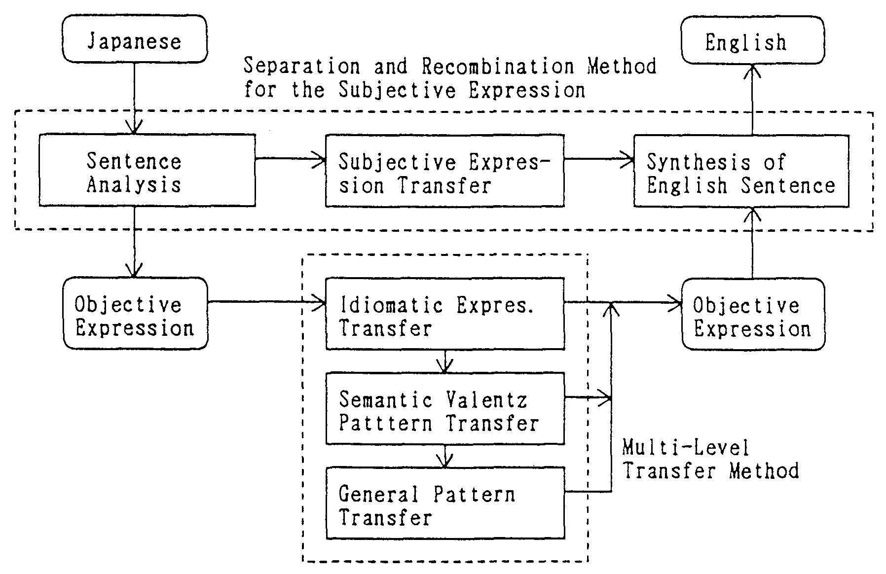

Recently, several types of Japanese to English MT (machine translation) systems have been developed, but prior to using such systems, they have required a pre-editing process of re-writing the original text into Japanese that could be easily translated. For communication of translated information requiring speed in dissemination, application of these systems would necessarily pose problems. To overcome such problems, a Multi-Level Translation Method based on Constructive Process Theory had been proposed. In this paper, the benefits of this method in ALT-J/E will be described.
In comparison with the conventional elementary composition method, the Multi-Level Translation Method, emphasizing the importance of the meaning contained in expression structures, has been ascertained to be capable of conducting translation according to meaning and context processing with comparative ease. We are now hopeful of realizing machine translation omitting the process of pre-editing.
Recently, R&D efforts at machine translation of differing language families, such as Japanese and English, have become popular [Tomabechi 1987, Tomita 1987 and MT Summit-I 1987]. But between such differing language families, differences in perspectives and grasping of objects affect the structuring of expressions. These differences in expression structures make it difficult to convert each other in their existing state mechanically. For example, in Japanese to English machine translation, the more typical the Japanese expression, the more difficult to translate it into English due to differences in the thought process.
As a means of solving this problem, efforts have been made in the area of limited languages [Nagao 1985] or knowledge-based translation [Nirenburg 1989]. But under existing circumstances, when using a Japanese to English machine translation system, a Japanese expression requires translation into easily translatable Japanese by human effort. In other words, there is a need to re-write the text into more English type of concept before machine translation can be performed.
This action of re-writing is normally known as pre-editing [Nagao 1989]. Measures involved in pre-editing include use of a single word so as to mean only one meaning, limiting the method of using "joshi" (Japanese post-positional word), auxiliary verbs and other words likely to be interpreted several ways, to replace, in advance, any words which may have been omitted, re-writing of idiomatic expressions to more general expressions. These all represent efforts to re-write into Japanese expressions which are literally translatable into English.
In viewing the problem of pre-editing in Japanese to English translation, the problem would appear theoretically to be closely related to the principle of elementary composition method. The elementary composition method hypothesizes that "the meanings of the entire expression is the sum of the meanings of the various portions of the expression" [Nomoto, 1986]. With existing machine translation systems, this principle is hypothesized as a basic principle and between languages of the same family, this is regarded as a most effective method. (Yet when seeking high quality machine translation work, there still remain serious problems to be dealt with).
Japanese to English machine translation has reached the stage where in cases of sentences that allow conversions word by word from Japanese to English and assembly into final sentence form (i.e. where literal translation is possible), translation technology has already been established. But between the Japanese and English languages, there is a wide difference in the thought process constituting the background of linguistic expression. Therefore, translations under existing systems require pre-editing to re-write the original sentences into a form that will enable application of the elementary composition method, or in other words, a form that can undergo literal translation.
To go beyond the limits of conventional translation methods based on the elementary composition method, we have, from the viewpoint of Constructive Process Theory of Language [Tokieda 1941], proposed a Multi-Level Translation Method [Ikehara et al. 1987, 1989 and Ikehara 1989] and made a experimental system named as "Automatic Language Translator-Japanese to English (ALT-J/E)".
This method has focused attention on the fact that a mere combination of the meanings of individual words cannot express the meanings of the entire expression. It is a method of translation which grasps the structure and meanings of expressions on the whole. Meanings of words will vary according to the manner in which the words are used. Many expressions are used in meanings that cannot be explained directly from the meanings of each individual word. With attention focused on these characteristics, these units having structural meanings have been arranged systematically into a form of linguistic knowledge. They are being used in analyses of the Japanese language and conversions into English. As a result, prospects for basic solution to the previously existing problems of pre-editing have become brighter.
(1) Problems of Conventional Translation Systems
The transfer method and the pivot method have been regarded as representative methods in machine translation [MT Summit-I 1988]. Whereas the pivot method hypothesizes intermediate language common for both the original and the target language, the transfer system diners in that it performs conversion between an intermediate language relying on each language. Both have in common the fact that they establish an intermediate language as a meaning that is separate from the surface expression.
It is possible to seek the background regarding these methods in the dualism of computational linguistics [Chomsky, 1956, 1965 and Fillmore 1975] that discriminates between surface and deep structures.
But the deep structure as suggested by computational linguistics cannot be stated as having achieved success. In fact, concepts which deny the existence of deep structure have been suggested of late [Cresswell 1973, Mendelson 1979 and Bresnan 1982].
Computational linguistics is derived from computational logics [Allwood 1971]. It hypothesizes that meanings of expression do not rely on languages but is a form of common existence, and also hypothesizes that the meaning of the expression in its entirety is the sum total of the meanings of sections of the expression. But these hypotheses in actual languages are valid only partially. Thus, it would be difficult to apply this to machine translation which deals with actual sentences, particularly to translation involving a pair of languages with different family origins such as Japanese and English.
(2) Concept of the Constructive Process Theory of Language
The key to solving this problem is believed to lie with the linguistic evolution theory of the Tokieda Grammar [Tokieda 1941], one of the main streams of traditional study of the Japanese language. The Tokieda Grammar is derived from the theory of Norinaga Motoori [Motoori 1779] and is structured from a position of critique of the linguistic theory propounded by Saussure [Saussure 1909] and is regarded as one of the 4 major grammars of Japan.
According to the Constructive Process Theory of Language, language is to be grasped as a compound body of process as in the field of natural physics, and can be viewed as a relationship of "object", "(speaker's) recognition" and "expression". The relationship between "object" and "recognition" can be explained by "Epistemology" or "Reflection Theory", and between "recognition" and "expression" by "Linguistic Norm". The sole element that is common between two differing languages would be "object" and since there is a difference in viewing and grasping of "object" between languages, everything beyond "recognition" will become different according to the language in question. The very existence of "deep structure" which is neither "object" nor "recognition" is denied altogether.
Also, according to Tsutomu Miura [Miura 1967] who took after the Constructive Process Theory, the meaning of linguistic expressions is the relationship between object, recognition and expression. This relationship is objectively connected to expression itself. The concept of regarding "relationship" as meanings resembles the recent situation semantics [Barwise et.al. 1981]. But where situation semantics confuses "meanings of expression" with "meanings of the field where the expression is placed", Miura Grammar draws a distinct line between the two and propounds the theory pertaining to "meanings of expression" .
When language is regarded thus as a compound body of various processes, the following two points become important in machine translation placing importance on the meaning.
| a) | Expression is classified* into "subjective expression" which is a direct expression of emotions, intentions, and judgment of the speaker and "objective expression" which expresses object in the form of a concept, and reproduces them within the framework of the target language. | |
| * | Regarding the difference between subjective and objective expression, there is the theory of Port Royal [Royal 1660], before Norinaga Motoori. | |
| b) | The structure with which object is involved is reflected in recognition and this is further reflected in the structure of expression. Therefore, the structure of expression is to be considered as a sector of meanings, and the meaning is to be handled accordingly. |
ALT-J/E has realized the Multi-Level Translation Method with due consideration of the foregoing two points. First, this is a method which consists of four paths, one which corresponds to a subjective expression of the process of conversion from Japanese into English, and three paths corresponding to objective expressions. Second, the conversion path for objective expressions will convert by level into an abstract form so as to avoid losing the meaning of objective expression structure. Conversion is then conducted according to the level of abstract forms in the order of idiomatic expression transfer, semantic Valentz pattern transfer and general pattern transfer. The entire process is designed to prevent loss of meaning through elementary decomposition.
|
 |
Nouns are used to express existing objects as concepts. Depending on how the object is viewed and grasped, various profiles of the object are picked up or discarded and a noun to be used based on a profile corresponding to the view of the speaker is selected.
In conceiving the object, the special and individual characteristics are discarded and the features are recognized as a single unit. Among the concepts regarding semantic features, there have been attempts to explain the meaning of the nouns as a bundle of detailed meanings. But such a concept that is represented by noun is a single conclusive unit of recognition. It is, therefore, to be handled as a unit that can be reduced no further with the viewpoint of conception being classified by semantic categories.
For example, the object concept represented by the word "school" would include "the school as an organization" and "the school as a given location". In machine translation, there is a need to know which of these the word "school" signifies. Thus, with each noun, thought was extended to what type of profile it conceived for the object in its use and these were classified as semantic categories held by each noun.
The precision of reduction for semantic categories were regarded to be some 3,000 categories, about the number of important words which the normal person feels comfortable in using. A semantic category system has been specially structured, with some 2,800 categories (12-step tree structure) for common nouns, some 200 categories (9-step tree structure) for proper nouns. Based on this system, a semantic category dictionary was compiled with 400,000 caption words. The maximum number of semantic categories per word is 5 types of common noun categories and 10 types of proper noun categories. The actual number of categories furnished average to 2 types per word.
As an example of having conducted a conceptual classifications similar to semantic categorization, 30 to 50 categories have previously been used generally. With EDR [EDR 1990], plans to extend to 500 categories are being implemented. ALT-J/E System would be the first case of establishment of a system with precision for some 3,000 categories and compiling of a major scale dictionary (with 400,000 caption word) using this system.
The basic structure of Japanese sentences can be grasped mainly around declinable words (words such as verbs and adjectives which become predicate). Viewed from such declinable words, meanings of declinable words themselves and of their basic structure can be grasped from the types and meaning of nouns that are used in relation to the declinable words. Thus, with some 6,000 declinable words, a meaning structure dictionary consisting of 15,000 patterns has been prepared for use in analytical purposes.
With this method, analysis is performed by having units of semantics and structure correspond to one another and ambiguity in structural analysis is reduced. Having the English form structure will enable the basic English structure determined at the time structure used for expression in Japanese is clarified by analysis. This is helpful in avoiding the need for an additional conversion process.
Among the functions which have been realized through this method, the following are functions which will solve problems of the previous requirement for pre-editing.
Previously, re-writing of the original text was required so that one word of translation would correspond to a word in the Japanese original text. But, due to the meaning structure dictionary dealing with the semantic category and expression of the noun, it has now become possible to differentiate as shown in Fig.2 by precise translations. Re-writing of words is no longer necessary.
| |||||||||||||||||||||||||||||||||||||||
Also, it has become possible to translate typically Japanese expressions which were previously difficult to translate into English and to differentiate between translation of idiomatic expressions and general expressions.
Further, according to experiments, translation into English according to meanings of Japanese declinable words (Verbs and Adjectives) as shown in Fig.2 requires a description of detailed rules. It has been ascertained that this, in turn, requires a classification of details semantic categories. A look at rules involving 15,000 cases as registered in the expression structure dictionary reveals the frequency in use of semantic categories classified in the 8th to 9th step in the semantic category system to be high. This would indicate a need in declinable word translation for at least some 2,000 semantic category classifications.
In typically Japanese expressions where two or more words are combined to form many kinds of idiomatic expressions, there are many cases which cannot be literally translated and even if literally translated, would be inappropriate in the English language. It would be more advantageous to have such expressions automatically converted within the system into Japanese words that are easily translated. But previously, there have existed problems of side effects and this could not be realized.
This system has enabled precise inscription of conditions for application of rules through minute semantic categories. This has reduced all concern over side effects and made effective re-writing possible.
Fig.3 shows examples of Japanese sentences, which normally have numerous declinable words, in which portion of such declinable words have been converted into noun phrases for translation into English.
| ||||||||||||||||||||||||||||||||||||||||||||||||||||||||||||||||||||
The Japanese language normally omits writing what is known to the reader, and this tendency is prominent among subjects and objects. But in English, these elements are in most cases necessary and previously supplementing these constituted the important portion of pre-editing.
This system has, in addition to expression structure dictionary and semantic category, introduced an analysis of semantic category of declinable words realizing a function of supplementing ellipses grasping the semantic relations between a number of sentences.
As a characteristic of agglutinative language, the Japanese language generates new words (compound words) which are an amalgamation of a number of nouns, prefixes and suffixes. This type of compound words is generated without limitation and it would be difficult to have them all registered in a dictionary in advance. With conventional translation methods, registration of these compound words in the dictionary was an important issue for pre-processing.
With this system, by using a semantic category, has realized a function for compound word translation which analyzes semantic relationship of words constituting compound words. This function has assured possibilities of translations of compound words and also the automatic translation of compound words which vary in translation depending on the manner in which they are used within a sentence.
The Japanese to English machine translation experimental system ALT-J/E based on the Multi-Level Translation Method is currently undergoing the stage of debugging. To examine the benefits of this method, the newspaper lead sentences (a summary preceding the newspaper article proper, generally consisting of 3 to 5 sentences per article, and average 20 words per sentence) were handled with translation experiments being conducted as follows.
| Blind Test (BT): | |
| Experiments conducted with articles chosen at random with no registration of unknown words registration nor rule revisions. | |
| Window Test (WT): | |
| Experiment within the scope of debugged sample. Unknown word registrations and rule revisions are conducted before the test. | |
| (In both cases, original text was translated without any pre-editing) | |
Grading standards are an improved version of the ALPAC standards [ALPAC, 1966] with 10 points for full mark and grades 6 or higher (meaning understandable by reading translation only) being passing. Grading was consigned to outside company specialists in translation. The average of grades as judged by three specialists in Japanese into English translation were taken to determine passing or failing grades for each individual sentence.
The condition for a passing grade was that the meaning could be understood by looking at the translation. Thus, sentences that were ruled as passing are not necessarily guaranteed to be appropriate in terms of its being a flawless product. But it is estimated that the quality level of existing Japanese to English machine translation system has been achieved.
According to this test, current passing ratio of BT and WT translation were 40 to 50% and over 60%, respectively. This indicates a passing ratio of about double the existing ratio of Japanese to English machine translation system. For tests pertaining to technical subjects (translation of which are more easy than the newspaper lead sentences), the passing ratio of 80% was achieved.
Based on the foregoing results, it can be judged with the Multi-Level Translation Method, a major step toward realization of a Japanese to English machine translation systems requiring no pre-editing has been achieved.
The major problem currently being faced is improvement of translation rates of long sentences (of 30 words or longer) and overall upgrading of translated text quality as English. To meet this challenge, research efforts are presently being exerted toward an extensive range Japanese to English conversion method designed to analyze the meaning of the structure of declinable words and to establish an appropriate English structure to correspond to this. This conversion method will be adding a new path to the three conversion paths corresponding to objective expression in the Multi-Level Translation Method which will further improve and strengthen this method.
As an issue to be dealt with over the long term, research efforts being extended include a review of the system of parts of speech in the Japanese language and multiple dimension of semantic category of words.
For realization of a Japanese to English machine translation system requiring no pre-editing, the foregoing has been a presentation of the effects of Multi-Level Translation Method as suggested from the viewpoint of Constructive Process Theory. By this method, the major factors for original text pre-editing are believed to become unnecessary. But there remain certain problems over translation of typically long Japanese sentences and upgrading of the quality of finished translations.
The Multi-Level Translation Method is positioned at the level of meaning analysis technology with a background of linguistic knowledge. It is estimated that there are limitations (translation rate of about 80%) for this level of technology. To break through this level of limitation, establishment of the technique of meaning comprehension based on expansion of general and specialized knowledge of fields involved in the target language is essential. However, since it is difficult to achieve such a meaning comprehension of an extremely broad and general field, we plan to establish the limits for meaning analysis first, and follow by research in the area of meaning comprehension.
The authors wish to thank Dr. Masahiro Miyazaki, Mr. Kentarou Ogura and other members of the research group on MT for their valuable contribution to discussions.